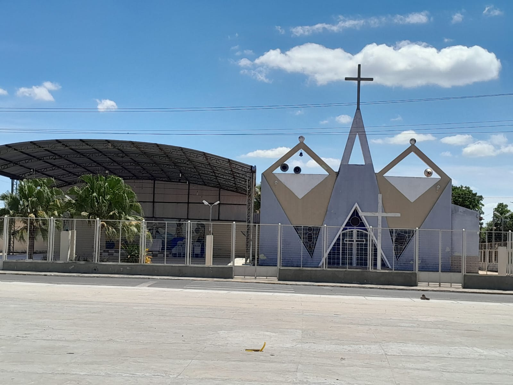

Nossa Cidade
Descubra os lugares e as tradições que fazem parte da história e da identidade cultural de Boa Hora.
Preservando a cultura e a tradição de Boa Hora – PI
Conheça as histórias, os bois, as apresentações e as manifestações culturais que fazem parte da identidade de Boa Hora, no Piauí.
Carregando fotografias...
O Reisado de Boa Hora, no estado do Piauí, é uma manifestação cultural e religiosa que atravessa gerações, preservando a devoção aos Santos Reis e a identidade do povo bohorense.
Com raízes nas tradições trazidas pelos portugueses e enriquecidas por diferentes influências culturais, o Reisado ganhou características próprias no município. Por meio das cantorias, dos caretas, dos bois e das visitas às famílias, a celebração reúne fé, alegria, criatividade e memória coletiva.
Embora não exista uma data historicamente comprovada para o início do Reisado em Boa Hora, os conhecimentos transmitidos entre gerações demonstram a importância dessa manifestação para a comunidade.
A professora e pesquisadora Teresinha Dias da Silva Rocha contribuiu para registrar essa história em sua obra publicada em 2017, reunindo pesquisas e relatos sobre a tradição.
O Reisado Digital 2.0 nasce com o propósito de contribuir para a preservação e divulgação desse patrimônio cultural, aproximando moradores, pesquisadores, estudantes e visitantes das histórias e manifestações que fazem de Boa Hora um lugar de tradição.
Lugares, símbolos e tradições que ajudam a contar a história da nossa cidade.

Descubra os lugares e as tradições que fazem parte da história e da identidade cultural de Boa Hora.

Conheça os símbolos e as manifestações culturais relacionadas à tradição dos Santos Reis em nossa região.
Acompanhe as próximas apresentações dos bois e participe dessa tradição.
Carregando agenda...
Conheça os bois do Reisado de Boa Hora, seus proprietários e os bairros ou localidades onde estão cadastrados. Explore o mapa e clique nos ícones para visualizar as informações culturais.
O mapa apresenta referências culturais cadastradas no sistema, sem rastreamento de localização em tempo real.
Abrir mapa completo